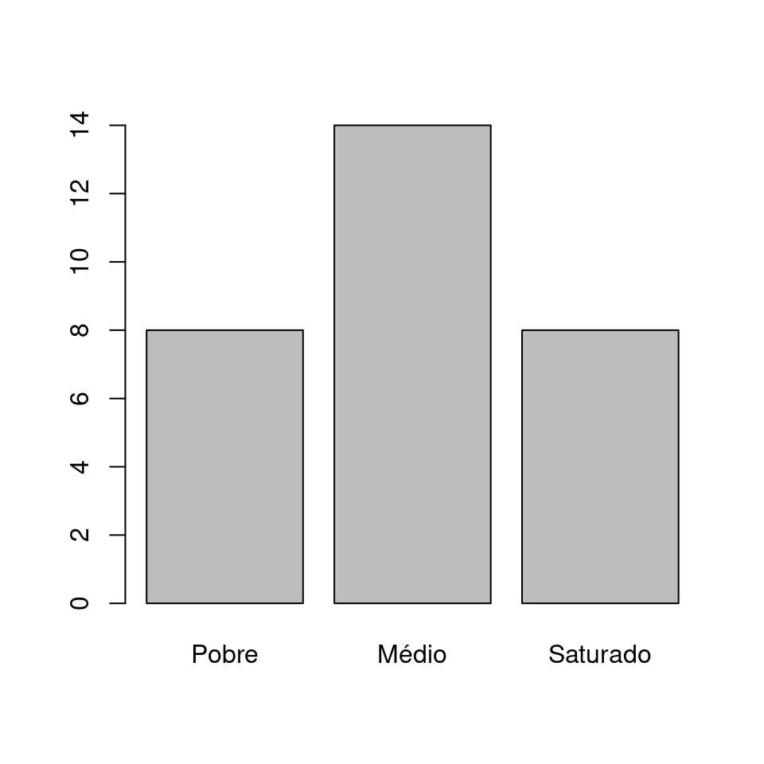
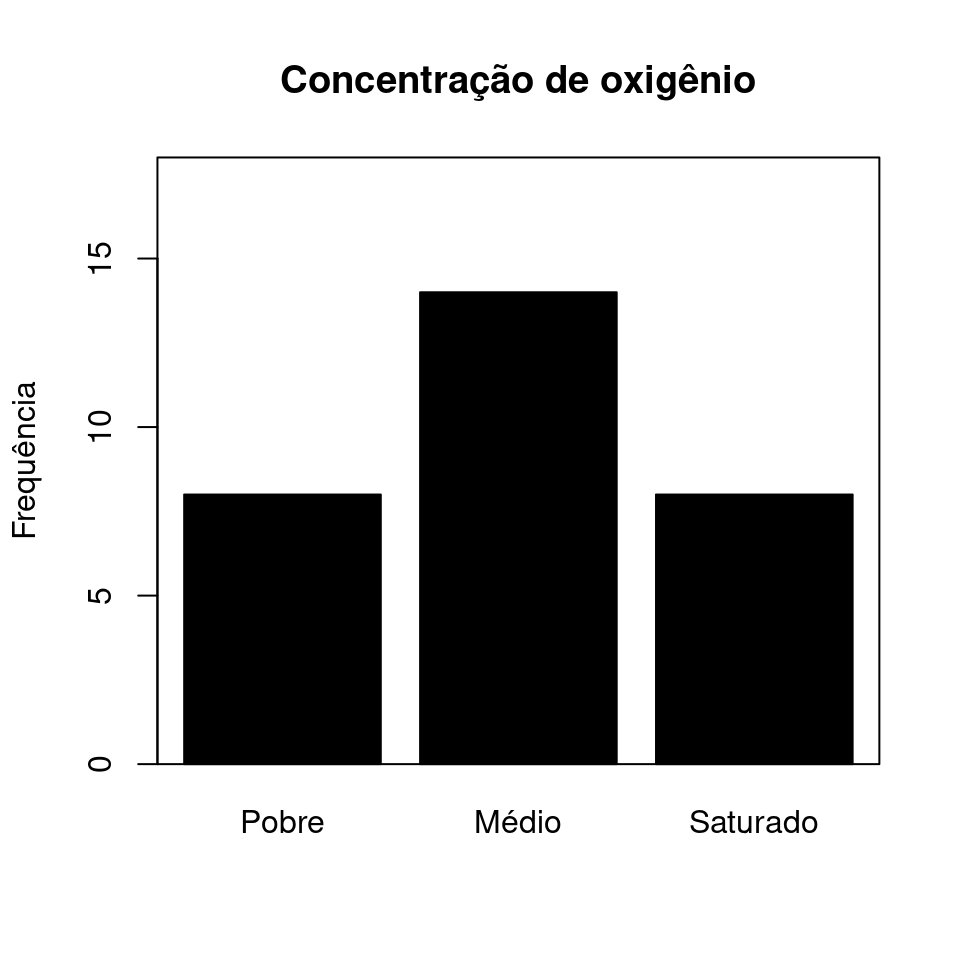
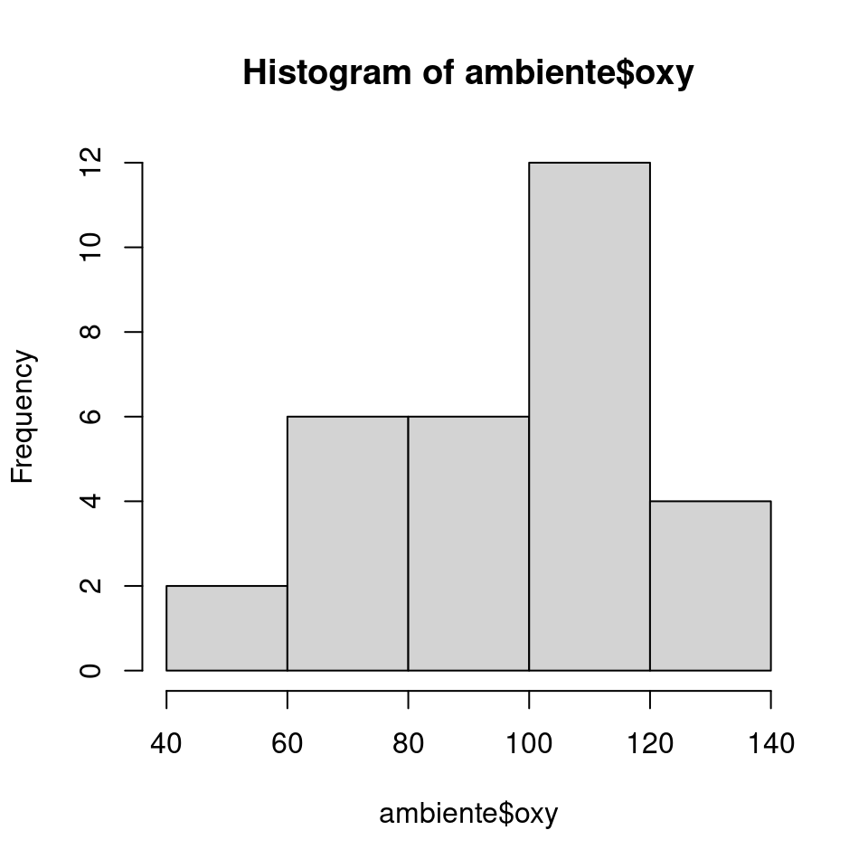
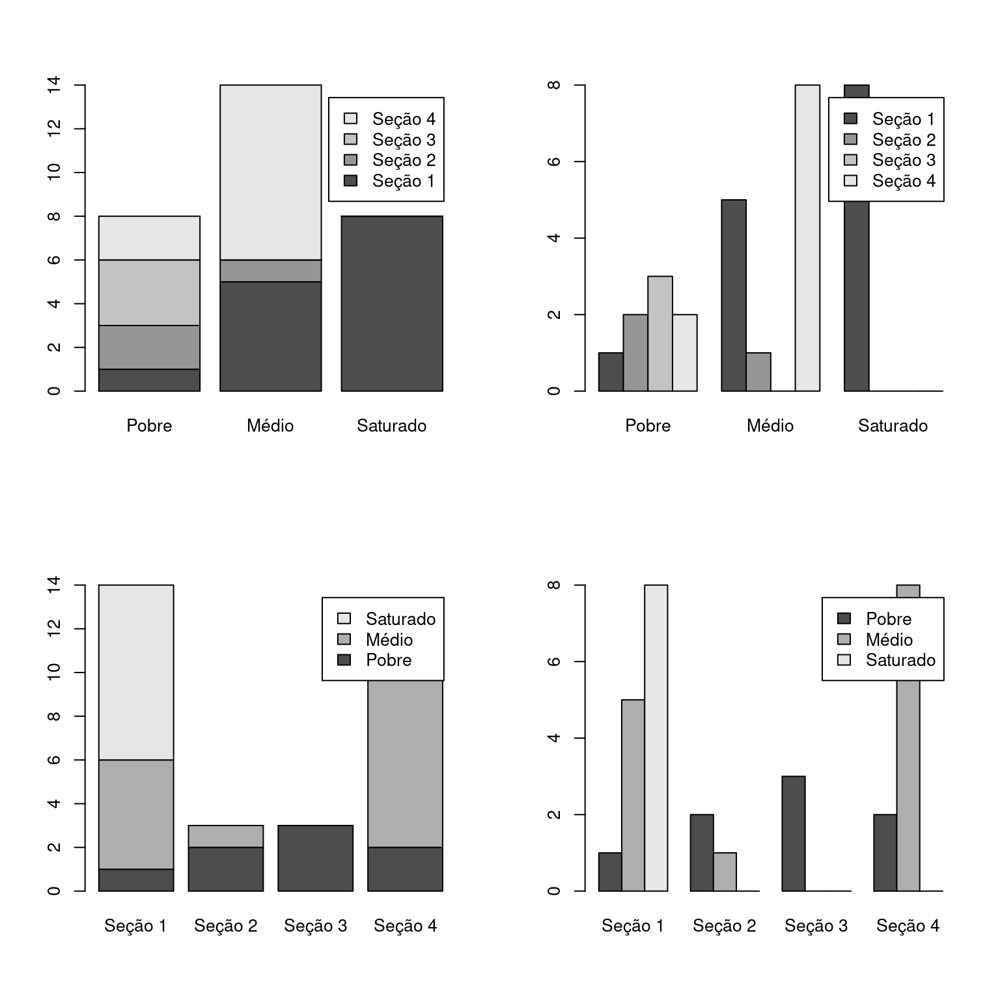
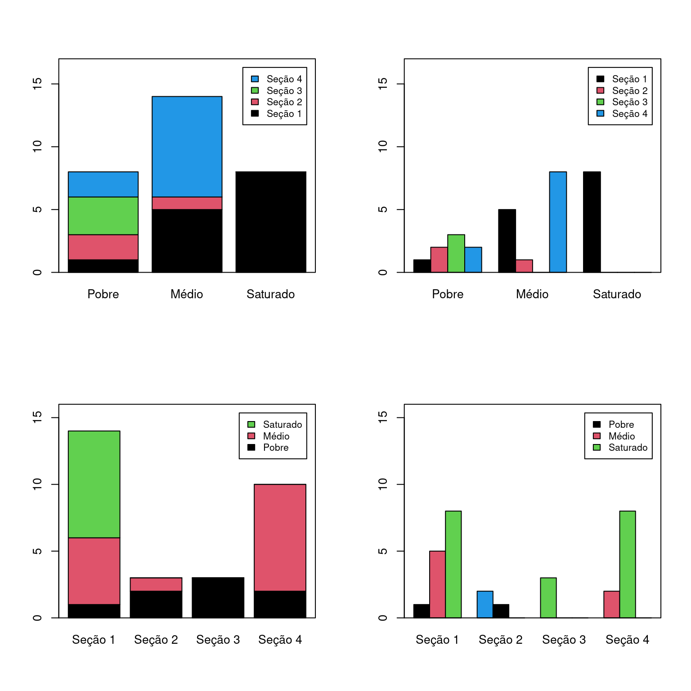
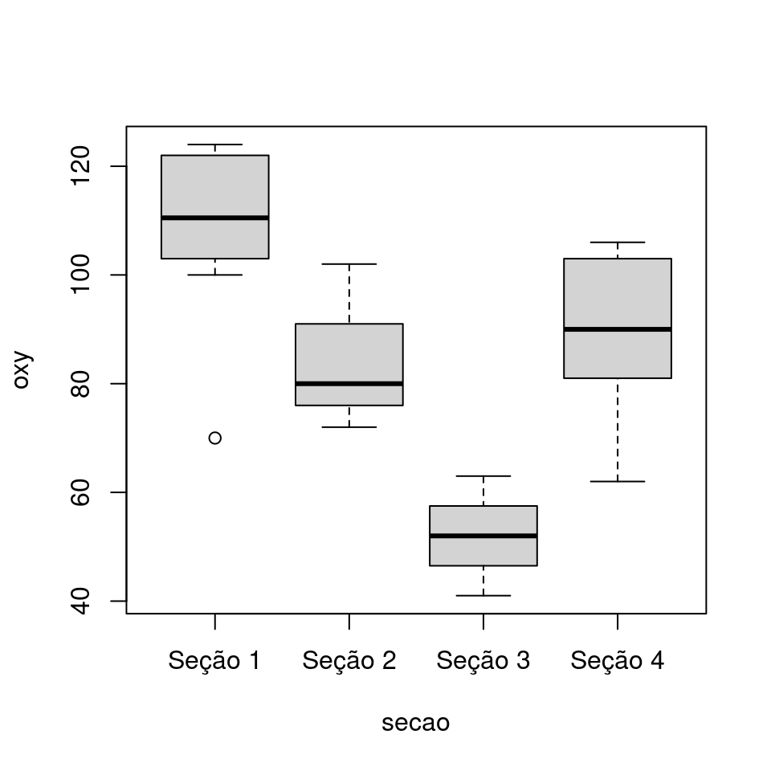
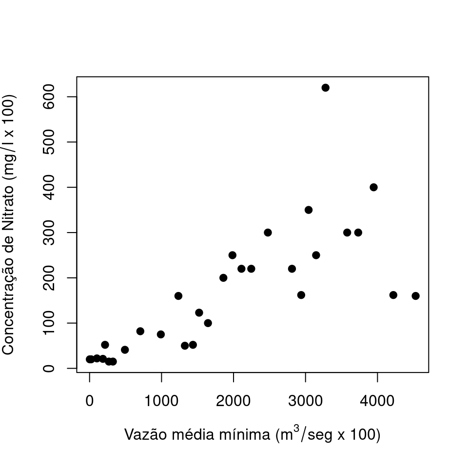
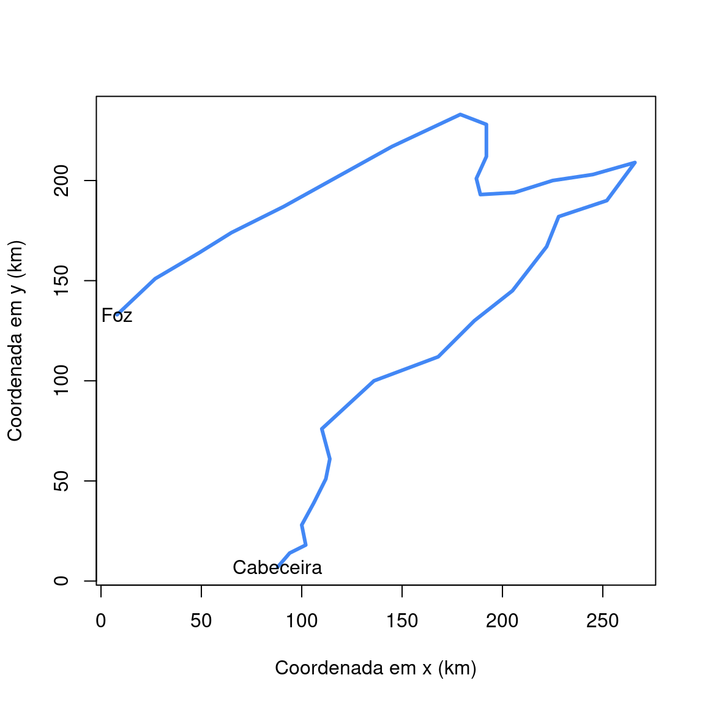
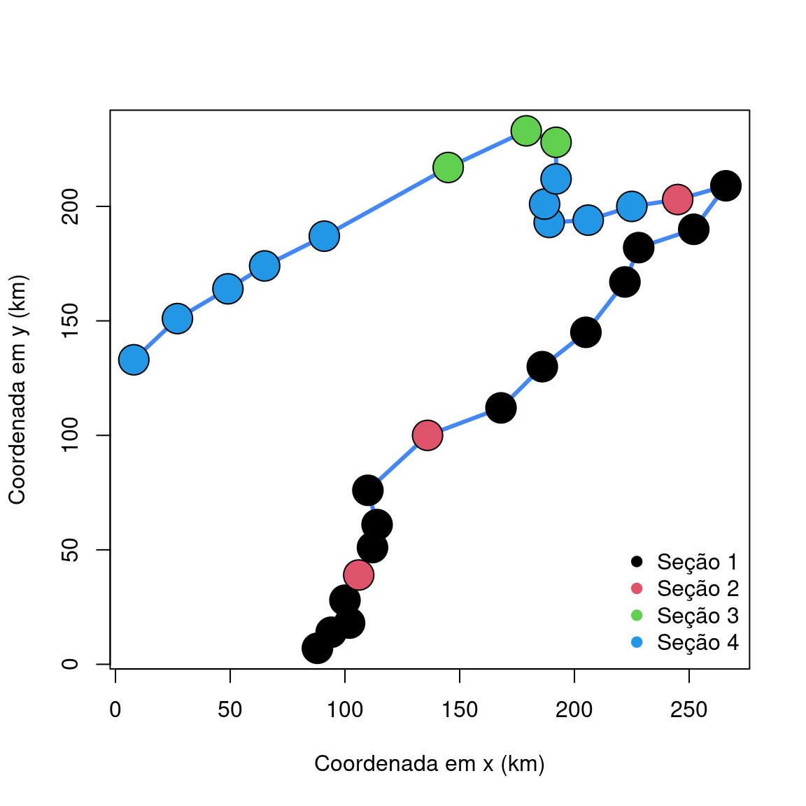
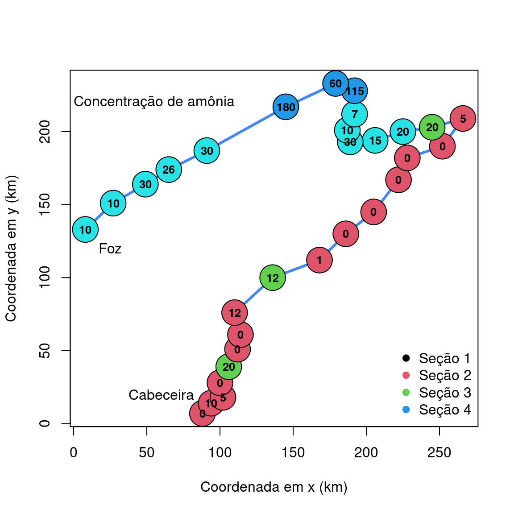

install.packages("ade4")(Básico da) Visualização gráfica
R
Programação
Gráficos em R
Visualização de dados
Introdução à criação de gráficos em R: gráficos de barras, histogramas, boxplots, dispersão e exportação de figuras.
A visualização gráfica consiste em representar visualmente os padrões de distribuição de uma variável ou a associação entre duas ou mais variáveis. Os tipos de gráficos utilizados dependem do tipo de variável (categórica ou numérica) e do número de variáveis envolvidas. Temos gráficos univariados para uma única variável, gráficos bivariados para associação entre duas variáveis e gráficos multivariados para mais de duas variáveis.
As funções gráficas discutidas nesta seção estão disponíveis no pacote graphics, que vem instalado por padrão no R, não sendo necessário instalar pacotes adicionais. Essas funções oferecem elevado controle sobre elementos gráficos (fontes, tamanhos, cores), mas podem ser complexas para criar figuras elaboradas. Apesar de muitas nomenclaturas serem compatíveis para o controle de eixos, títulos e tamanhos de fonte, os argumentos nem sempre são coesos entre os diferentes tipos de gráficos, o que pode dificultar o aprendizado. No entanto, essas funções fornecem uma base sólida sobre a estrutura gráfica no R, permitindo resolver rapidamente muitas situações do dia a dia da análise exploratória.
1 Doubs river dataset
Para demonstrar algumas ferramentas gráficas, será utilizado o conjunto de dados Doubs River data, disponível no pacote ade4 (Dray, Dufour, e Thioulouse 2015). Esse conjunto de dados foi apresentado na seção anterior sobre manipulação de data frames, onde foi importado o arquivo dbenv.csv. Agora, será usado o conjunto de dados completo.
O conjunto de dados do Rio Doubs (Verneaux 1973) consiste de amostras sequenciais da cabeceira à foz do rio, em condições que variam de águas bem oxigenadas e oligotróficas a águas eutróficas e desprovidas de oxigênio. O conjunto de dados é uma lista com quatro data frames:
$env: data frame com variáveis ambientais relacionadas à hidrologia, geomorfologia e química do$fish: data frame com abundâncias das espécies de peixes capturadas nos locais de amostragem.$xy: data frame com coordenadas geográficas de cada ponto de amostragem.$species: data frame com os nomes científicos, populares em francês e inglês, e códigos abreviados das espécies capturadas.
1.1 Instalando o pacote ade4 e carregando os dados
- Instale o pacote
ade4:
- Carregue o pacote:
library(ade4)- Habilite o conjunto de dados
doubs
data(doubs)- Confira se consiste de uma lista:
class(doubs)
str(doubs)- Leia a descrição do conjunto de dados para conchecê-lo melhor.
?doubs- Extraia os dados ambientais para um novo
data.frame:
ambiente <- doubs$env- Adicione a este data frame uma nova variável categórica denominada
secaocom quatro níveis (Borcard, Gillet, e Legendre 2018).
ambiente$secao <- c(rep("Seção 1", 16), rep("Seção 4", 14))
ambiente$secao[c(5,9,17)] <- "Seção 2"
ambiente$secao[23:25] <- "Seção 3"
ambiente$secao <- factor(ambiente$secao)- Adicione outra variável categórica, indicando três níveis de saturação de oxigênio em cada ponto.
ambiente$saturacao <- cut(ambiente$oxy, breaks = c(0, 80, 109, 124),
labels = c("Pobre", "Médio", "Saturado"))
head(ambiente, 10) dfs alt slo flo pH har pho nit amm oxy bdo secao saturacao
1 3 934 6.176 84 79 45 1 20 0 122 27 Seção 1 Saturado
2 22 932 3.434 100 80 40 2 20 10 103 19 Seção 1 Médio
3 102 914 3.638 180 83 52 5 22 5 105 35 Seção 1 Médio
4 185 854 3.497 253 80 72 10 21 0 110 13 Seção 1 Saturado
5 215 849 3.178 264 81 84 38 52 20 80 62 Seção 2 Pobre
6 324 846 3.497 286 79 60 20 15 0 102 53 Seção 1 Médio
7 268 841 4.205 400 81 88 7 15 0 111 22 Seção 1 Saturado
8 491 792 3.258 130 81 94 20 41 12 70 81 Seção 1 Pobre
9 705 752 2.565 480 80 90 30 82 12 72 52 Seção 2 Pobre
10 990 617 4.605 1000 77 82 6 75 1 100 43 Seção 1 Médio2 Descrevendo os padrões de uma variável
2.1 Gráfico de barras
Um gráfico de barras é utilizado para verificar a contagem de cada nível de uma variável categórica. Faça um gráfico de barras para a variável saturacao.
Inicialmente, monte uma tabela de frequencia:
tab1 <- table(ambiente$saturacao)
tab1
Pobre Médio Saturado
8 14 8 Em seguida represente-a em um gráfico de barras:
barplot(tab1)
Adicionando elementos de formatação gráfica:
barplot(tab1,
main = "Concentração de oxigênio",
ylab = "Frequência",
ylim = c(0, 18), col = "black")
box()
2.2 Histograma
Um histograma descreve o padrão de distribuição de uma variável quantitativa a partir da divisão desta variável em intervalos de classe.
O histograma abaixo para a coluna oxy expressa a saturação de oxigênio (mg/l \(\times\) 10).
hist(ambiente$oxy)
No histograma, o intervalo de classes determina o formato exato do gráfico. No exemplo acima, a escolha foi feita automaticamente. No entanto, é possível definir o intervalo desejado com o argumento breaks:
classes <- seq(40, 140, by = 20)
hist(ambiente$oxy, breaks = classes)
A divisão foi feita em intervalos de tamanho 20, iniciando em 40 e terminando em 140. A escolha deve ser a que evidencie da melhor forma possível o padrão de distribuição da variável.
2.3 Boxplot
Boxplots oferecem um resumo gráfico da distribuição de uma variável quantitativa. Abaixo está representada a variável oxy.
boxplot(ambiente$oxy)
A linha do meio representa a mediana da variável, enquanto os limites das caixas representam o \(1^o\) e \(3^o\) quartis e as linhas externas representam os pontos mínimo e máximo. Estes limites podem ser obtidos com o comando:
quantile(ambiente$oxy, probs = c(0, 0.25, 0.5, 0.75, 1)) 0% 25% 50% 75% 100%
41.00 80.25 102.00 109.00 124.00 3 Associação entre duas variáveis
3.1 Gráfico de barras
Um gráfico de barras pode combinar duas variáveis categóricas como secao e saturacao. Inicialmente, monta-se uma tabela de frequência, combinandos as contagens para cada nível das variáveis.
tab2 <- table(ambiente[,c("secao", "saturacao")])
tab2 saturacao
secao Pobre Médio Saturado
Seção 1 1 5 8
Seção 2 2 1 0
Seção 3 3 0 0
Seção 4 2 8 0Neste caso, é possível representar estas contagens de diferentes formas:
layout(mat = matrix(1:4, nrow = 2, ncol = 2, byrow = TRUE))
barplot(tab2, legend = TRUE)
barplot(tab2, legend = TRUE, beside = TRUE)
barplot(t(tab2), legend = TRUE)
barplot(t(tab2), legend = TRUE, beside = TRUE)
A função
layout(mat = matrix(1:4, nrow = 2, ncol = 2, byrow = TRUE))organiza o espaço gráfico em um formato matricial com 2 linhas por 2 colunas, permitindo a inserção de 4 figuras. O argumentobyrow = TRUEdefine que as figuras serão adicionais linha-a-linha.A função
t()transpõe a tabela, o que consequentemente altera a referência da figura. No primeiro caso, a concentração de oxigênio é a variável principal e, no segundo caso, são as seções.O argumento
beside = TRUEfaz com que as barras apareçam lado-a-lado ebeside = FALSEresulta em cada barra representa a variável principal subdividida nos níveis da variável secubdária.Em todos os gráficos foi adicionada uma legenda.
Adiocionando elementos de formatação:
cores <- 1:4
limy1 <- c(0, 17)
limy2 <- c(0, 16)
legenda <- list(cex = 0.8)
layout(mat = matrix(1:4, nrow = 2, ncol = 2, byrow = TRUE))
barplot(tab2, legend = TRUE, col = cores, ylim = limy1,
args.legend = legenda)
box()
barplot(tab2, legend = TRUE, beside = TRUE, col = cores,
ylim = limy1, args.legend = legenda)
box()
barplot(t(tab2), legend = TRUE, col = cores, ylim = limy2,
args.legend = legenda)
box()
barplot(t(tab2), legend = TRUE, beside = TRUE, col = cores,
ylim = limy2, args.legend = legenda)
box()
3.2 Boxplot
O boxplot também pode ser utilizado para representar uma variável \(X_1\) para diferentes níveis de uma variável categórica \(X_2\), por exemplo oxy para cada nível de secao.
boxplot(oxy ~ secao, data = ambiente)
Os pontos associados à Seção 1 têm maiores concentrações de oxigênio (mediana = 110.5) e que os pontos associados à Seção 3 (mediana = 52).
Na função boxplot foi utilizada a representação de fórmula no R (y ~ x) em que a variável no eixo y depende de x. Esta notação é amplamente utilizada em modelos estatísticos (ex. regressão linear, e análise de variância, etc.).
- Ao invés de acessar a variável por
ambiente$oxy, utilizou-se o nome da coluna (oxy) e adicionou-se o argumentodata = ambientepara indicar em qual data frame a função irá buscar as variáveis.
3.3 Gráfico de dispersão
Um gráfico de dispersão mostra a associação entre duas variáveis quantitativas, por exemplo, concentração de nitrato (mg/l \(\times\) 100) e distância da foz (km \(\times\) 10). Neste caso a concentração de nitrato será representada como dependente da distância da foz.
plot(nit ~ dfs, data = ambiente)
Os resultados expressam uma relação em que a concentração de nutrientes aumenta à medida que distancia-se da foz.
Adicionando formatação gráfica: nomes dos eixos (argumentos xlab e ylab) e tipo de ponto (argumento pch).
plot(nit ~ dfs, data = ambiente,
xlab = bquote("Vazão média mínima (m" ^3/"seg x 100)"),
ylab = bquote("Concentração de Nitrato (mg"/"l x 100)"),
pch = 19
)
4 Compreendendo o ambiente por meio de suas variáveis
Um dos objetivo da descrição gráfica é representar o sistema por meio das variáveis escolhidas para quantificá-lo. Além dos gráficos apresentados anteriormente, há outras formas de incorporar essas variáveis em uma figura, utilizando cores, símbolos e textos no ambiente gráfico. Nesta seção, serão exploradas algumas possibilidades.
Os pontos de amostragem foram obtidos ao longo do gradiente cabeceira-foz. As informações incluem as coordenadas geográficas desses pontos (no data frame $xy). A sequência dos pontos segue uma ordem crescente de distância da foz. Inicialmente, serão plotadas as coordenadas geográficas de todos os pontos utilizando um gráfico de linhas.
plot(x = doubs$xy$x, y = doubs$xy$y, type = "l",
xlab = "Coordenada em x (km)",
ylab = "Coordenada em y (km)",
col = "#4287f5", lwd = 3)
Compare a figura com o desenho do rio Doubs.
Nota
Utilizamos a definição de cores em HEXADECIMAL. Você pode fazer o mesmo, escolhendo a cor desejada aqui: hex color picker.
Representando os pontos de amostragem.
pontos_extremos <- doubs$xy[which(doubs$env$dfs == min(doubs$env$dfs) |
doubs$env$dfs == max(doubs$env$dfs)),]
plot(x = doubs$xy$x, y = doubs$xy$y, type = "l",
xlab = "Coordenada em x (km)",
ylab = "Coordenada em y (km)",
col = "#4287f5", lwd = 3)
text(x = pontos_extremos$x,
y = pontos_extremos$y,
labels = c("Cabeceira", "Foz"))
Representando as \(4\) seções do rio.
secao_cor <- as.numeric(ambiente$secao)
plot(x = doubs$xy$x, y = doubs$xy$y, type = "l",
xlab = "Coordenada em x (km)",
ylab = "Coordenada em y (km)",
col = "#4287f5", lwd = 3)
points(x = doubs$xy$x, y = doubs$xy$y, pch = 21,
bg = secao_cor, cex = 3)
legend(x = "bottomright", col = 1:4,
legend = levels(ambiente$secao), bty = "n", pch = 19)
Representando a concentração de amônia (amm).
secao_cor <- as.numeric(ambiente$secao) + 1
plot(x = doubs$xy$x, y = doubs$xy$y, type = "l",
xlab = "Coordenada em x (km)",
ylab = "Coordenada em y (km)",
col = "#4287f5", lwd = 3)
points(x = doubs$xy$x, y = doubs$xy$y, pch = 21,
bg = secao_cor, cex = 4)
legend(x = "bottomright", col = 1:4,
legend = levels(ambiente$secao), bty = "n", pch = 19)
text(x = doubs$xy$x, y = doubs$xy$y, labels = doubs$env$amm,
cex = 0.8, font = 2)
text(x = 55, y = 220, labels = "Concentração de amônia")
text(x = 25, y = 120, label = "Foz")
text(x = 60, y = 20, label = "Cabeceira")
A figura nos informa sobre a distribuição espacial da concentração de amônia entre as seções. Verifica-se que a concentração de amônia é mais nas seções \(4\) e \(3\).
Nota
Utilizamos uma série de funções novas: text, points, legend. Para entender como elas funcionam, rode os comandos acima linha por linha e veja como cada função adiciona uma informação adicional à figura.
5 Outros argumentos de formatação gráfica
A capacidade de formatação gráfica no R é extensa e qualquer tentativa de resumí-las seria incompleta. Abaixo exemplificam alguns argumentos comuns de formatação gráfica.
plot(nit ~ dfs, data = ambiente)
plot(nit ~ dfs, data = ambiente, pch = 2)
plot(nit ~ dfs, data = ambiente, pch = 19)
plot(nit ~ dfs, data = ambiente, pch = 19, type = "b")
plot(nit ~ dfs, data = ambiente, pch = 19, type = "b",
xlab = "Nitrato", ylab = "Vazão")
plot(nit ~ dfs, data = ambiente, pch = 19, type = "b",
xlab = "Nitrato", ylab = "Vazão", font.lab = 3)
plot(nit ~ dfs, data = ambiente, pch = 19, type = "l",
lty = 2)
plot(nit ~ dfs, data = ambiente, pch = 19, type = "l",
lty = 2, lwd = 3)
plot(nit ~ dfs, data = ambiente, pch = 19, type = "l",
lty = 2, lwd = 3, col = 2)6 Figuras compostas
Uma das formas mais simples para inserir múltiplas figuras no mesmo espaço gráfico é por meio da função layout. Abaixo, serõ inseridos \(6\) gráficos em uma espaço de \(3\) colunas por \(2\) linhas.
layout(mat = matrix(1:6, nrow = 3, ncol = 2))
plot(alt ~ dfs, data = ambiente)
plot(amm ~ alt, data = ambiente)
plot(nit ~ alt, data = ambiente)
plot(pH ~ alt, data = ambiente)
plot(bdo ~ alt, data = ambiente)
plot(oxy ~ alt, data = ambiente)
7 Exportando figuras: funções png, tiff, jpeg e bmp
É possível exportar figuras em diversos formatos e resoluções. A função png é exemplificada abaixo. As funções para exportar em outros formatos são similares.
png(filename = "Exemplo_figura.png",
width = 15, height = 15, units = "cm",
pointsize = 10, bg = "white", res = 800)
plot(alt ~ dfs, data = ambiente, pch = 19, type = "b",
xlab = "Vazão", ylab = "Elevação")
dev.off()A figura foi salva do diretório atual de sua seção de trabalho. Você pode conferir este diretório com o comando:
getwd()Experimente alterar os argumentos width, height, pointsize, units (com "px", "in", "cm" ou "mm") e res.
As capacidades gráficas no R incluem ainda muitos outros argumentos. Alguns deles são: cores (col), tipos da fonte (font), tamanhos de símbolos (cex), dos labels (cex.lab), dos rótulos dos eixos (cex.axis), título (main), etc. Pode-se ainda inserir legendas (função legend) e textos (função text). Veja o help de cada uma destas funções e a lista de argumentos possíveis para o ambiente gráfico do R em ?par. Veja também uma demonstração com demo(graphics), demo(image), demo(persp) e demo(plotmath).
Existem diversos outros pacotes gráficos além do graphics:
ggplot2ggvisLatticehighcharterLeafletRColorBrewerPlotlysunburstRRGLdygraphs
Referências
Borcard, Daniel, François Gillet, e Pierre Legendre. 2018. Numerical ecology with R. Springer.
Dray, S, AB Dufour, e J Thioulouse. 2015. «ade 4: analysis of ecological data: exploratory and Euclidean methods in environmental sciences. R package version 1.7-2».
Verneaux, Jean. 1973. «Cours d’eau de Franche-Comté (Massif du Jura). Recherches écologiques sur le réseau hydrographique du Doubs. Essai de biotypologie». Thèse d'État, Besançon: Université de Besançon.